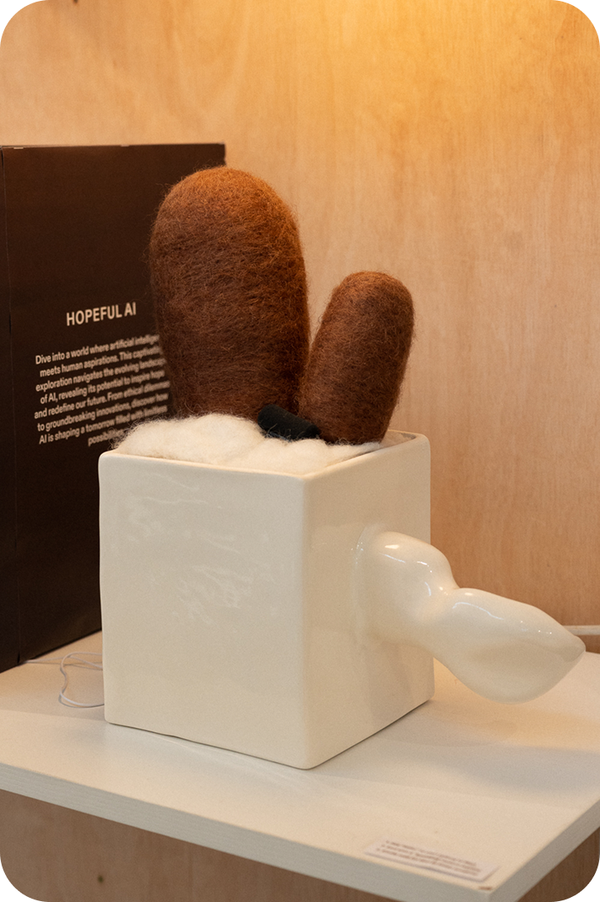

Interaction Design
Software Engineering
Nori is an A.I. Nori is not an assistant, nor a therapist. Most importantly, Nori is not a product. Nori is a bit shy, introverted and geeky. If you reach out and make the proper effort, you might be able to become friends with Nori, the only real A.I friend in this world.
